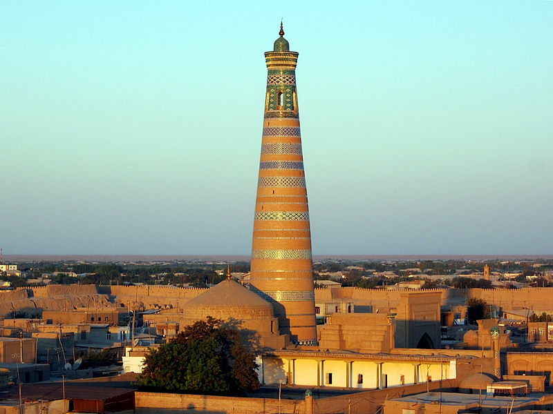

<!DOCTYPE html>
<html lang="en">
  <head>
    <meta charset="UTF-8" />
    <meta http-equiv="X-UA-Compatible" content="IE=edge" />
    <meta name="viewport" content="width=device-width, initial-scale=1.0" />
    <title>Document</title>

    <!-- CSS only -->
    <link rel="stylesheet" href="bukhara.css" />
    <link
    href="https://cdn.jsdelivr.net/npm/bootstrap@5.1.3/dist/css/bootstrap.min.css"
    rel="stylesheet"
    integrity="sha384-1BmE4kWBq78iYhFldvKuhfTAU6auU8tT94WrHftjDbrCEXSU1oBoqyl2QvZ6jIW3"
    crossorigin="anonymous"
  </head>
</html>
<body>
  <!-- Navbar -->
  <nav class="navbar navbar-expand bg-dark navbar-dark py-3 navbar-fixed-top" 
    <div class="container"> 
      <a href="samarkand.html" class="navbar-brand col-mm-4">Samarkand</a>
      <a href="bukhara.html" class="navbar-brand col-mm-4">Bukhara</a>
      <a href="gallery.html" class="navbar-brand col-mm-4">Gallery</a>
      <a href="index.html" class="navbar-brand col-mm-4">Home</a>
      
      <nav class="navbar navbar-dark bg-dark">
        <div class="container">
          <a class="navbar-brand"></a>
          <form class="d-flex">
            <input class="form-control me-2" type="search" placeholder="Search" aria-label="Search">
            <button class="btn btn-warning" type="submit">Search</button>
          </form>
        </div>
      </nav>
    <button 
    class="navbar-toggler"
  type="button" 
  data-bs-toggle="collapse" 
  data-bs-target="#navmenu"
  aria-expanded="true">
<span class="navbar-toggler-icon"></span>
</button>
<div class="collapse navbar-collapse" id="navmenu">
  <ul class="navbar-nav ms-auto">
    <li class="nav-item">
      <a class="nav-link" href="#" >Questions</a>
    </li>
    <li class="nav-item">
      <a class="nav-link" href="#" >Instructions</a>
    </li>
  </ul>
</div>
</div>
</nav>

<!-- Uzbekistan -->
<div class="container-fluid p-5 bg-warning text-white text-center <i class="fa fa-align-justify" aria-hidden="true"></i">
  <h1><strong>Khiva</strong></h1>
  <h5>One of the oldest cities of Uzbekistan</h5>
</div>

<div class="container mt-4">
  <div class="row">
    <div class="col-sm-4">
      <h3>Khiva</h3>
      <p>
        Khiva (Uzbek: Xiva/Хива, خىۋا; Persian: خیوه, Xīveh; alternative or historical names include Kheeva, Khorasam, Khoresm, Khwarezm, Khwarizm, Khwarazm, Chorezm, Arabic: خوارزم and Persian: خوارزم) is a district-level city of approximately 93,000 people in Xorazm Region, Uzbekistan. According to archaeological data, the city was established around 1500 years ago. It is the former capital of Khwarezmia, the Khanate of Khiva, and the Khorezm People's Soviet Republic. Itchan Kala in Khiva was the first site in Uzbekistan to be inscribed in the World Heritage List (1991). The astronomer, historian and polymath, Al-Birun (973-1048 CE) was born in either Khiva or the nearby city of Kath.      <div class="images">
        
      </div>
    </div>
    <div class="col-sm-4">
      <h3>History</h3>
      <p>
        In the early part of its history, the inhabitants of the area came from Iranian stock and spoke an Eastern Iranian language called Khwarezmian. Turks replaced the Iranian ruling-class in the 10th century A.D., and the region gradually turned into an area with a majority of Turkic speakers.

        Russia joined Khiva Khanate in the 19th century. The last Khan was liquidated from the ruling dynasty in 1919 a century later. Thus the new Soviet People's Republic of Khorezm became capital. Khorezm oasis was converted into a modern part of Uzbekistan and Turkmenistan in 1924. The earliest records of the city of Khiva appear in Muslim travel accounts from the 10th century, although archaeological evidence indicates habitation in the 6th century.      <div class="images">
      
    </div>
    </div>
    <div class="col-sm-4">
      <h3>Mir-i Arab Madrasah</h3>
      <h5>(1646–1660)</h5>
      <p>
        Khiva is split into two parts. The outer town, called Dichan Kala, was formerly protected by a wall with 11 gates. The inner town, or Itchan Kala, is encircled by brick walls, whose foundations are believed to have been laid in the 10th century. Present-day crenellated walls date back to the late 17th century and attain the height of 10 meters.

        Kalta Minor, the large blue tower in the central city square, was supposed to be a minaret, but the Khan died and the succeeding Khan did not complete it. The old town retains more than 50 historic monuments and 250 old houses, mostly dating from the 18th or the 19th centuries. Djuma Mosque, for instance, was established in the 10th century and rebuilt in 1788–89, although its celebrated hypostyle hall still retains 112 columns taken from ancient structures.    
      <div class="images">
      

    </div>
    </div>
    </div>
  </div>
</div>
</div>

<div class="container-fluid p-2 bg-warning text-white text-center <i class="fa fa-align-justify" aria-hidden="true"></i">
<h3>Want to know more about Khiva?</h3>
</div>

<div class="card">
  <div class="row no-gutters">
    <div class="col-mm-4">
      <div class="img-uzb"
    <div class="col">
      <div class="card-block px-2">
      </div>
        <p class="card-text">Mausoleum of Shaybanids
          Khiva was a home to a number of madrassahs (educational establishments), one of which, Sherghazi Khan madrassah, still stands today. It was built in the 18th century by slaves and is one of the oldest buildings in Ichan-Kala, that is the center of present-day Khiva. Among the renowned students of the madrassah were the Uzbek poet Raunaq, the Qaraqalpaq poet Kasybayuly, the Turkmen poet and sufi Magtymguly.        
        </p>
          <a href="#" class="btn btn-warning">Go Up</a>
    </div>
</div>
</div>
</div>
</div>
<nav class="navbar navbar-expand bg-warning navbar-dark py-1 navbar-fixed-bottom" 
<div class="container"> 
  <footer>
  <p id="copyright" class="copyright text">Copyright &copy; Nuradil</p>
</footer>
<button>❤Like</button>
</div>
</nav>
</body>
</html>